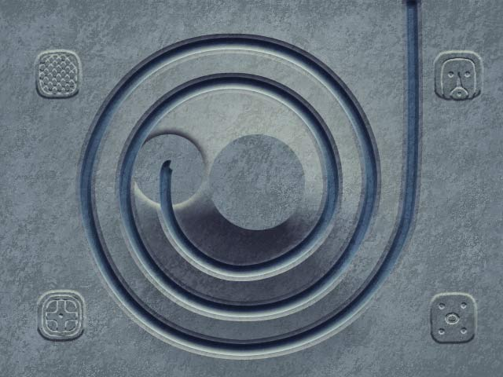

1-1

Spiral of Doom
spiral · settings: lvl11
Gauntlet 35: #80 / 92 trong nhóm 1 tuyến
Nhóm dễ · risk 57.5 · s35: speed 1.6, start 75, Zuma 8000
Nhóm dễ · risk 57.5 · s35: speed 1.6, start 75, Zuma 8000
Tuyến1
Speed.5
Start35
Zuma1000
Màu
Ace Time25s
Dài trung bình2762 px
Cân xứngKhông áp dụng
Chồng tuyếnKhông áp dụng
Điểm Zuma: 1000Mục tiêu ngắn, thiên về vượt màn nhanh.
Xuất phát: 35Lượng bi xuất phát thấp.
Độ dài từng đường: 2762 pxĐường rất dài. Tổng độ dài: 2762 px.
Bất cân xứng: Không áp dụngMap chỉ có một tuyến.
Đường bắn bị che: 55% (đoạn cuối tuyến 1: 14%)Đường bắn thoáng hơn phần lớn các map, nhất là đoạn gần lỗ.
Nguy cơ một đường che/chồng đường khác: Không áp dụng — 0%Map chỉ có một tuyến.
Dễ · 12/100
Điểm áp lực 12/100. Nhẹ: bi chạy chậm so với độ dài đường, đường bắn thoáng.